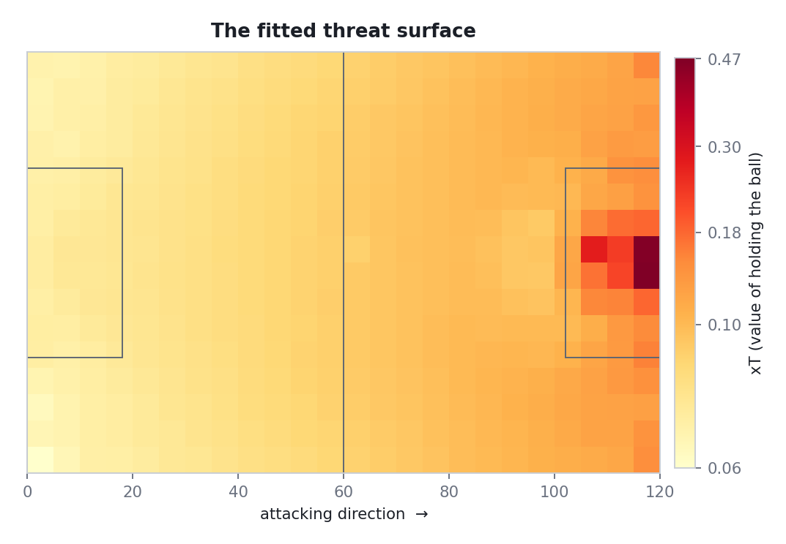
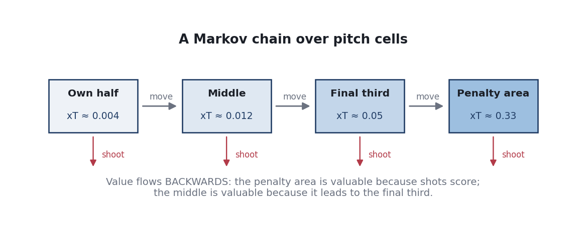
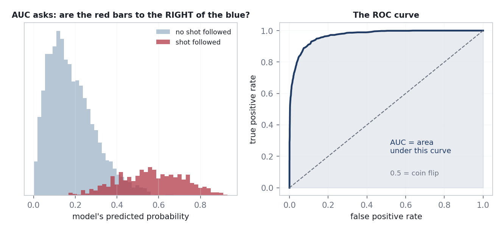
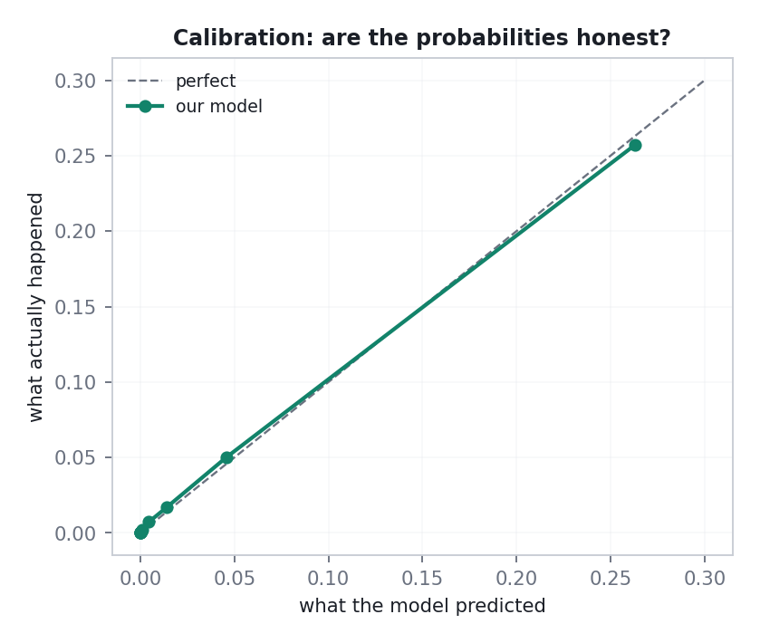
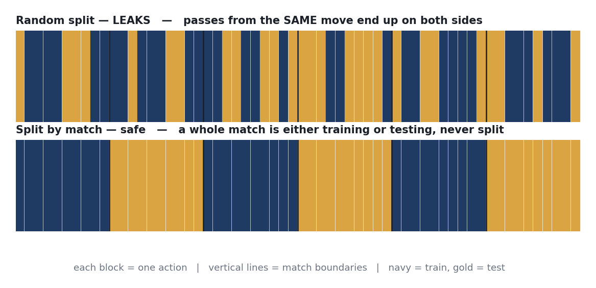
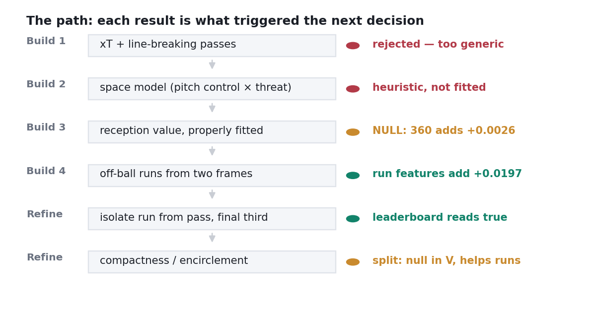
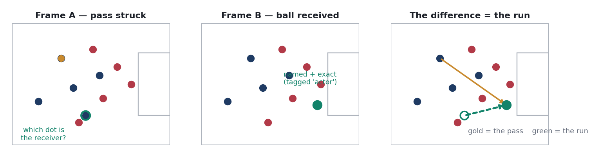
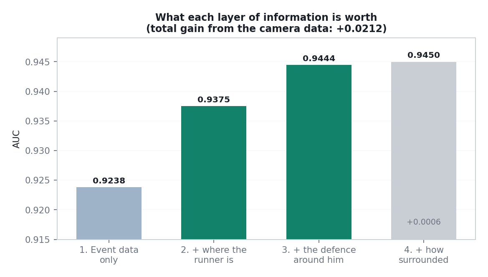
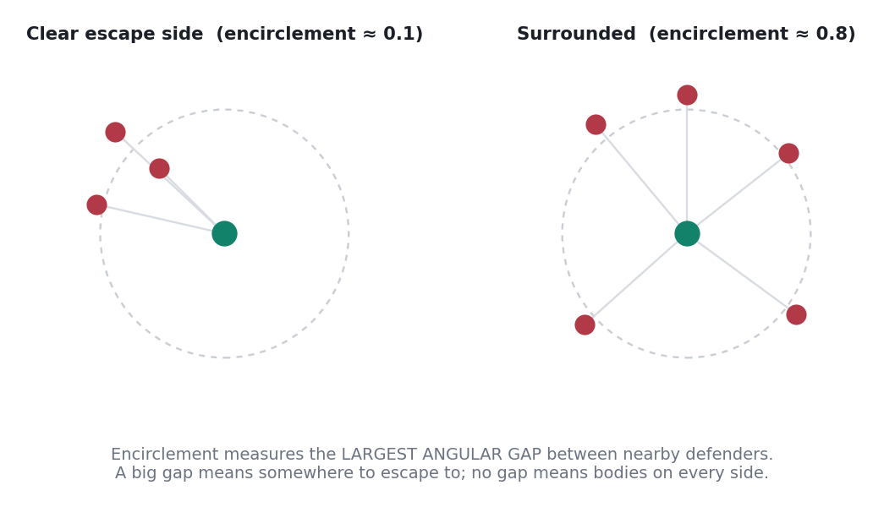
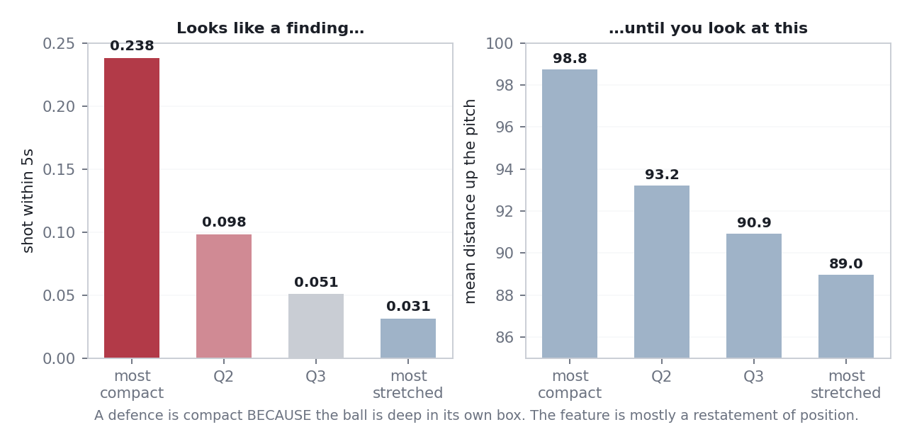

Every number in football credits the player who touched the ball.
Expected goals credits the shooter. Expected assists credits the passer. Expected threat credits whoever carried or played the ball forward. Every one of these is measured at the moment of contact with the ball.
Now think about what actually happens in the ten seconds before a goal. A striker drifts off the shoulder of the last defender. A full-back starts an overlap that pulls the winger's marker two yards inside. A midfielder checks into a pocket between the lines. Only one of those players will touch the ball. In the data, the other two did nothing at all.
This is not a small gap. "Does he move well without the ball?" is among the first questions any scout asks about a forward, and the honest answer from data has always been: we cannot see that.
There was a second reason to choose it. StatsBomb 360 data gives the position of every visible player at the moment of each event. Most things you can do with it, you could approximate without it. But you cannot measure a player who is not on the ball without seeing him — so this is a question where the camera data is genuinely required rather than merely convenient. If the data has a reason to exist, this is it.
Before any modelling, the question needs a definition sharp enough to compute. A useful measure of an off-ball run has to answer three things:
The rest of this book is, in effect, an account of getting those three things out of data that was never designed to provide them.
The standard football dataset is a long list of events. Each row is one thing that happened: a pass, a carry, a shot, a tackle. Each row carries a player, a team, a timestamp, a pitch location, and some type-specific detail (was the pass completed, what was the shot's expected-goals value).
A match has roughly 3,000 to 4,000 of these. It is a rich record of everything that happened to the ball, and a complete blank about everything else. Twenty-one players are invisible at any given moment.
StatsBomb 360 adds, for each event, a freeze-frame: the coordinates of every player the broadcast camera could see at that instant, each tagged as a team-mate or an opponent of the player on the ball.
| What a freeze-frame gives you | What it does not |
|---|---|
| Every visible player's position at that moment | Any player outside the camera view |
| Whether each is a team-mate or opponent | Player identities — the dots are anonymous |
Who the ball-player is (tagged actor) | Velocity — it is a still photo, not video |
| The goalkeeper flag | Anything between two events |
The off-ball dots are anonymous. You can see that a team-mate is standing at (62, 22); you cannot see which team-mate. This single fact rules out the naive approach — "track each named player's movement between frames" — and forced the method described in Chapter 14.
StatsBomb records a Ball Receipt event when a player receives a pass.
Crucially, that event has its own freeze-frame, and in it the receiver
is the actor — meaning at the moment of receipt he is named and
precisely located, along with every defender around him.
So for every completed pass we have two photographs a second or two apart: one when the ball left, one when it arrived. That pair is the raw material for everything that follows.
An early instinct was to use a tournament — the 2022 World Cup has 360 data on all 64 matches and the most recognisable players. That instinct was wrong, for a reason worth stating clearly.
A metric about movement needs many observations per player. A tournament gives a player three to seven matches. That is enough to rank teams and far too little to characterise how an individual moves.
So the requirement became: maximise matches per player, not matches in total.
The obvious answer was a league season. Checking the open data showed that every "league" release is in fact a single club's season — the other clubs appear only in their two fixtures against that club.
| Competition | What it actually is | Matches |
|---|---|---|
| La Liga 2020/21 | Barcelona's season | 35 |
| Ligue 1 2021/22 | PSG's season | 26 |
| Ligue 1 2022/23 | PSG's season | 32 |
| Bundesliga 2023/24 | Bayer Leverkusen's season | 34 |
| World Cup 2022 | A tournament | 64 (max 7 per player) |
The resolution was to pool all four club seasons: 127 matches, and between 26 and 93 matches per player. Messi appears in three of them.
Four different leagues, four different eras, and each is a strong team, so opponents are not typical. Players are therefore compared across tactical systems. Within a squad the comparison is clean; across leagues, treat the order as indicative. The competition label is carried on every row so it can be controlled for.
Before any football, a short map of the field: what the main kinds of machine learning are, and which one this problem actually is.
Supervised learning is learning with an answer key. You show the computer thousands of examples where the outcome is already known — "here is the situation, here is what happened next" — and it learns the pattern connecting them. Then you hand it a new situation and it predicts.
Unsupervised learning has no answer key. You give it data and ask it to find structure by itself: which things resemble each other, what the natural groupings are. Nobody says what is correct, because there is no correct.
| Supervised | Unsupervised | |
|---|---|---|
| You provide | Inputs and known outcomes | Inputs only |
| It learns | A mapping from input to outcome | Structure, groupings, compression |
| Typical tasks | Classification, regression | Clustering, dimensionality reduction |
| Can you score it? | Yes — compare prediction to truth | Not objectively; you judge usefulness |
| Football example | "Will this shot be a goal?" (xG) | "Which players have similar profiles?" |
Supervised, binary classification, and specifically probability estimation. Three reasons, in order of importance:
ΔV). A yes/no cannot be subtracted
meaningfully; a calibrated probability can.| Approach | What it would look like here | Why not |
|---|---|---|
| Unsupervised clustering (k-means, DBSCAN) |
Group runs into types — in behind, checking short, overlapping — without labelling them first | Genuinely interesting and on the list for later. But it produces descriptions, not values: it cannot say a run was worth something, and it cannot be scored. It could never answer the question this project was set. |
| Logistic regression | The same supervised task with a linear model | The natural baseline, and a serious candidate. Rejected because the relationships are strongly interactive — a defender three metres away means something completely different on the halfway line and in the six-yard box. A linear model needs those interactions hand-built; a tree model finds them. Its advantage, interpretable coefficients, matters less here because the project explains itself through ablation rather than coefficients. |
| Neural network | A small feed-forward network on the same features | Overkill at this data size, worse with missing values, slower to iterate, and much harder to defend line by line in a live walkthrough. It would most likely match the tree ensemble rather than beat it. |
| Reinforcement learning | Treat football as a sequential decision problem and learn a policy | Conceptually the "right" frame for possession value, and where the literature points. But it needs a simulator or vastly more data, and it is unfalsifiable at this scale — you cannot check a learned policy against 127 matches. |
| Survival analysis | Model time until a shot rather than a fixed five-second window | Arguably more elegant, and it removes an arbitrary parameter. Left as a future improvement because the fixed window is far easier to explain and its length can be sensitivity-tested directly. |
Logistic regression was never actually run as a comparison. It should have been — a linear baseline is cheap and would have quantified how much the tree model's flexibility is really buying. That is listed in the final chapter as something to fix rather than quietly passed over.
These three terms get used interchangeably and they are not the same thing. Getting the distinction right is the single most important idea in the project, and it is the question I was asked twice before the answer was good enough.
"How good is this situation?" Possession value is the umbrella term for any number that answers that. If your team has the ball on the edge of the opposition box, the situation is worth a lot. On your own goal line, very little. Every method below is one way of putting a number on that intuition.
A function V(state) → ℝ mapping a game state to an
expected future reward. Implementations differ in three ways: what counts as a state,
what reward is predicted, and whether the function is fitted or constructed.
Picture a price map of the pitch. Every square has a price: how likely a goal is to follow from there. Your own corner flag is nearly worthless. The penalty spot is expensive. Moving the ball from a cheap square to an expensive one is "creating threat", and the difference between the two prices is how much you created.
The catch: the map knows only where the ball is. Two players standing on the same square get the same price — one with an open goal ahead, one surrounded by three defenders.
A value function over a discretised pitch (here 24 × 16 = 384 cells), solved as a Markov decision process by value iteration (Chapter 6). Once solved it is a constant lookup table. Its state space is the ball's cell and nothing else — no opponents, no team-mates, no game state.

The distinction that matters is between a lookup and a model.
| Expected Threat | Our V(state) | |
|---|---|---|
| Form | Lookup table over pitch cells | Fitted classifier (LightGBM) |
| Inputs | Ball location only | Ball, the player, and the defenders around both |
| How it is built | Markov chain + value iteration | Supervised learning on labelled outcomes |
| What it predicts | Goal probability, propagated backwards | P(shot within the next 5 seconds) |
| Sees the opposition? | No | Yes |
V(state) = P( the team in possession takes a shot within the next 5 SECONDS
| ball position, the player's position, and the
defensive structure around both )
run value = ΔV = V(after) − V(before)
The first version of the run metric was Σ [xT(reception) − xT(origin)]
— two lookups on a fitted grid, subtracted. When asked what was actually being
modelled, the honest answer was: nothing new. That is arithmetic on
someone else's model.
It was replaced by the fitted V above. The xT version
survives in the output as a plain-language companion — it explains in one sentence to
a non-technical audience — but it is labelled as descriptive, not as the model.
How the price map gets its prices.
A Markov chain is a system that hops between situations, where where you go next depends only on where you are now — not on how you got there. Snakes and Ladders is a Markov chain: your next roll does not care about your route so far. This is called the memoryless property.
Now apply that to a pitch. Chop it into squares. From any square, two things can happen: you shoot, or you move the ball to another square. Watch thousands of matches and you can count how often each happens. Then ask: what is a square worth? A square is worth the goals you score from it directly, plus the value of the squares it usually leads to. Since those squares have the same question attached, you solve it by going round in circles until the numbers stop changing.

Each cell is a state. From cell i the ball is either shot (with probability
P(shoot|i), scoring with P(goal|shoot,i)) or moved, with
transition matrix T(i→j) estimated from completed passes and carries. The
value function satisfies a Bellman equation:
xT(i) = P(shoot|i)·P(goal|shoot,i) + P(move|i)·Σⱼ T(i→j)·xT(j)
This is solved by value iteration: initialise
xT = 0 everywhere, apply the equation repeatedly, and the values converge
(we use 40 sweeps). The contraction is guaranteed because P(move|i) < 1
— some probability mass leaves the chain at every step, so the recursion terminates.
xt = np.zeros((NX, NY)) # every cell starts worth nothing
shot_value = p_shot * goalp # value if you shoot from here, right now
for _ in range(config.XT_ITERATIONS): # 40 sweeps is plenty to converge
xt = shot_value + p_move * np.einsum("ijkl,kl->ij", T, xt)
return xt
T is the
transition tensor T[i,j,k,l] = probability the ball moves from cell
(i,j) to cell (k,l); the einsum contracts it against the current values
to give the expected value of moving. Each sweep pushes value one pass further back
from goal. It converges because p_move < 1 — some probability leaves
the chain every step.Two reasons. First, xT is the threat layer used inside our own model as a
feature, so its properties propagate. Second, it has a quirk that caused a real bug:
because value leaks everywhere through the move term, no cell has value
zero. The lowest value on our surface is about 0.06, not 0. An early metric
summed control × threat and was therefore dominated by defenders making
many harmless deep receptions, each earning a small but non-zero score. The fix was to
weight by threat above the pitch floor.
A lookup is a price list: find the row, read the number. It cannot account for anything not on the list. A model has been shown thousands of examples and has learned which combinations of circumstances lead to which outcomes. Ask it about a situation nobody has seen before and it will still give a sensible answer.
Picture a series of simple yes/no flowcharts. The first makes a crude guess — "if the ball is in the box, say 20%". The second is built specifically to fix the first one's mistakes. The third fixes what is still wrong, and so on for a few hundred rounds. Each flowchart on its own is weak. The accumulated stack is strong. That is boosting: many weak learners, each correcting its predecessors.
Additive training of shallow decision trees. At round m
the new tree is fitted to the negative gradient of the loss with respect to the current
ensemble's predictions — for log-loss, that gradient is simply the residual
(y − p̂). Predictions accumulate as
Fm(x) = Fm−1(x) + η·hm(x), where
η is the learning rate. LightGBM grows trees leaf-wise (splitting
whichever leaf reduces loss most) rather than level-wise, which converges in fewer
trees but overfits more readily — hence the leaf cap below.
| Requirement of this problem | Why gradient-boosted trees fit it |
|---|---|
| Strong interactions. A defender three metres away means something different on the halfway line than in the box. | Trees represent interactions natively — a path down a tree is a conjunction of conditions. A linear model would need every interaction specified by hand. |
| Non-linear, saturating relationships. Threat rises sharply near goal, not steadily. | Trees are piecewise-constant, so they fit sharp thresholds without any transformation of the inputs. |
| Missing values. Not every freeze-frame yields every feature. | LightGBM routes missing values down a learned default branch — no imputation, no silently invented data. |
| Mixed scales. Metres, counts, probabilities, angles. | Trees split on order, not magnitude, so no scaling or normalisation is needed and none can go wrong. |
| Fast iteration. Every model in this book was fitted many times over. | LightGBM fits 186,000 rows in seconds, which is what made ablation cheap enough to use everywhere. |
| Explainability under questioning. | Every parameter has a plain-language meaning (below). There is no architecture to defend. |
| Parameter | Value | What it controls | Why this value |
|---|---|---|---|
n_estimators | 350 | How many corrective rounds | Enough for the loss to flatten at this learning rate; more adds time, not accuracy |
learning_rate | 0.05 | How much each round is trusted | Low and cautious. Small steps generalise better; the cost is needing more rounds, which is cheap here |
num_leaves | 31 | Complexity of each individual tree | The main overfitting control in leaf-wise growth. 31 is a moderate default; higher would let single trees memorise |
min_child_samples | 60 | Minimum examples behind any rule | Refuses to invent a rule from a handful of runs — important with 3.3% positives |
subsample | 0.8 | Fraction of rows each tree sees | Decorrelates the trees so they do not all make the same mistake |
colsample_bytree | 0.8 | Fraction of features each tree sees | Stops one dominant feature (ball position) from being used by every tree |
random_state | 7 | Seed | Fixed so every number in this book is reproducible |
def _oof(feats):
X = df[feats].astype(float).values
oof = np.zeros(len(df))
gkf = GroupKFold(n_splits=min(5, pd.Series(groups).nunique()))
for tr, te in gkf.split(X, y, groups):
m = lgb.LGBMClassifier(n_estimators=350, learning_rate=0.05, num_leaves=31,
subsample=0.8, colsample_bytree=0.8,
min_child_samples=60, random_state=config.RANDOM_STATE,
n_jobs=-1, verbose=-1)
m.fit(X[tr], y[tr])
oof[te] = m.predict_proba(X[te])[:, 1] # column 1 = P(shot)
return oof, dict(auc=float(roc_auc_score(y, oof)),
brier=float(brier_score_loss(y, oof)),
n=int(len(y)), base_rate=float(y.mean()))
groups is match
identity, so no match is ever split (Chapter 9). oof[te] stores each
prediction into the rows that fold held out, so nothing is scored by a model that
trained on it. predict_proba(...)[:, 1] takes the probability of the
positive class — a probability, not a label, because ΔV subtracts them.Three different questions, three different numbers. Confusing them is the most common way to overstate a result.
Take one moment that led to a shot and one that did not. Ask the model to score both. AUC is simply the probability it scored the first one higher. 0.5 means it is guessing. 1.0 means it never gets the pair the wrong way round. It says nothing about whether the numbers themselves are sensible — only whether the order is.
Area under the ROC curve; equivalently the Mann–Whitney U statistic normalised by the product of class sizes. Invariant to any monotone transformation of the scores, and — crucially here — insensitive to class imbalance.

Only 3.3% of the moments in this dataset are followed by a shot. A model that always answered "no shot" would be 96.7% accurate and completely worthless. Accuracy is meaningless under this kind of imbalance; AUC is not fooled by it. This is why every headline number in the project is an AUC.
The average squared miss. If the model says 0.30 and the thing happens, it missed by 0.70. Square it, average over everything, lower is better. Where AUC checks the order, Brier checks the values.
Our possession-value model scores 0.0237, against 0.0243 for the location-only baseline.
Of all the moments the model called "5% likely", did about 5% of them actually happen? If yes, it is calibrated. A model can order perfectly and still be systematically over-confident.

The value of a run is one probability minus another. If the model were consistently inflated at one end of the scale, that bias would carry straight into every run score — and would not show up in AUC at all, because subtracting a constant bias leaves the ordering untouched. This is the reason calibration is reported and not just mentioned.
Grading a model on data it was trained on is like giving a student the exam paper to revise from. It will look brilliant and tell you nothing.
k-fold cross-validation is the fix: cut the data into five parts, train on four and predict the fifth, then rotate. Every row ends up predicted by a model that never saw it. Those are the numbers we report — they are called out-of-fold predictions.
Football data is nested: actions sit inside possessions, possessions sit inside matches. If you cut the data at random, two passes from the same passage of play can land on opposite sides of the split. The model then sees almost the same moment in training and testing — it has effectively been shown the answer. Scores come out inflated, and nothing looks wrong.

GroupKFold(groups=match_id) — folds are constructed so
that all rows sharing a match identifier fall into the same fold. This is the
assessment's explicit question about the temporal and nested structure of the data,
and it is handled at the grouping level rather than by a time cutoff, because the
dependence here is within match rather than across the season.
You think a new piece of information is useful. The way to find out is not to look at the model and see whether it seems to use it. It is to train the same model twice — once with the information, once without — on exactly the same data and exactly the same splits, then compare. The difference is what the information is worth. Everything else is opinion.
Modelling libraries will happily tell you how "important" each feature was. That measures how often the model used it — not how much it added. Two features carrying the same information will both look important while the second adds nothing. Chapter 21 describes a feature in this project that ranked second of twenty and turned out to mean something entirely different from what it appeared to. Ablation is the antidote.
This is incremental validity: the gain in out-of-sample performance from a feature set, holding the estimator, the rows and the fold assignment fixed. Because the folds are identical, the comparison is paired and the difference is not confounded by resampling noise.
Ablation is used three separate times in this project, and it is the backbone of every claim in it: to test whether 360 space features help value a reception (Chapter 11), to measure what each layer of camera information is worth (Chapter 17), and to isolate the run from the pass that found it (Chapter 17).
The first build was a conventional possession-value model: an expected-threat spine with a line-breaking-pass metric on top. It worked. The leaderboard was full of plausible names. It was also, in every important sense, the same project everybody builds.
Two reasons, neither of them statistical:

The replacement was a space model: pitch control × threat. Pitch control estimates who would reach each point of the pitch first; multiplying by threat gives a surface of "dangerous space this team controls".
Every player exerts an influence over the ground near him, fading with distance. At any point, whichever team's combined influence is greater is said to control it. It is a smooth way of drawing "whose area is this".
An isotropic Gaussian kernel per player (σ = 9 m); control at a point is the attacking team's share of total influence. This is a positional model, not Spearman's time-to-arrive formulation, because a single freeze-frame carries no velocity — a physics-based model is not identifiable from a still photograph. Stated as a limitation rather than glossed.
The resulting metric summed control × threat over a
player's receptions. Asked what was being modelled, the answer was: only the threat
layer. Pitch control was an unvalidated geometric heuristic, and the
metric predicted no outcome at all — there was nothing to check it against. A number
that cannot be wrong is not a measurement.
It was rebuilt with a genuine target — does this reception lead to a shot or a final-third entry? — and an explicit test of whether the 360 space features beat a location-only baseline. The result was agreed in advance to be reportable either way.
| Model | Features | AUC |
|---|---|---|
| Baseline | Location and geometry only | 0.7853 |
| + 360 space | Openness, defenders behind, lane, control | 0.7879 |
| Gain from the camera data | +0.0026 | |
Two models' predictions correlated with each other at 0.97. Note carefully what that correlation is between: it is model A against model B, row by row — not a correlation with the outcome. Adding the freeze-frame barely changed the number produced for any given reception. Worse, the gain was negative in the final third and in tight space, exactly where it should have been largest.
Interpretation: where you receive already tells you how much space you have. The camera was adding almost nothing to this particular question.
A negative result is information. If 360 adds nothing to valuing a reception, then its value must lie where event data is genuinely blind — in seeing a player who is not on the ball. That is the run, not the reception. This null result is the reason the project became what it is.
The reframed question: event data credits whoever touches the ball; the player who made the run gets nothing. This is the scouting question from Chapter 1, and it is the one question that cannot be approached without the camera at all.
It also changes what "adding value" means. In the reception model, 360 was competing against location — and losing, because location already encodes space. In the run model, 360 is not competing with anything: without it there is no run to measure. That distinction is developed properly in Chapter 15.
Recall the constraint: off-ball players in a freeze-frame are anonymous. You cannot follow a named player from frame to frame. The method works around it.

| Step | What we know | How certain |
|---|---|---|
| End of the run | The receipt frame tags the receiver as actor — named, exact position | Measured |
| Start of the run | He is somewhere in the release frame, as an anonymous team-mate dot | Inferred |
| The run | End minus start | As good as the inference |
Take the nearest team-mate dot to the reception point, subject to a physical
constraint: he cannot have covered more ground than a footballer can cover in the
ball's flight time. Pass duration is recorded, so the reachable distance is
duration × 9.5 m/s.
# candidate origins: team-mates in the release frame, excluding the passer
mates = rel_locs[rel_tm & ~rel_actor]
d = np.hypot(mates[:, 0] - recv[0], mates[:, 1] - recv[1])
order = np.argsort(d)
origin = mates[order[0]] # nearest team-mate to where he received
nearest_d, second_d = d[order[0]], d[order[1]]
ambiguity = float(second_d / (nearest_d + 1e-6)) # >1.5 = a confident match
dur = float(p["duration"]) # how long the ball was in flight
reach = dur * config.MAX_RUN_SPEED # furthest he could possibly have come
if nearest_d > max(reach, 12.0):
continue # not physically reachable -> bad match
ambiguity is the ratio of
second-nearest to nearest: near 1.0 means two players were equally plausible and the
match is a coin flip. reach is the physical bound — a footballer cannot
cover more than duration × 9.5 m/s while the ball travels.Because defenders appear in both frames, the change in the runner's situation is measurable: how far his nearest marker was before and after (separation gained), how many defenders he ended up behind, and how enclosed he was at each end. No event feed records any of this.
An inference that is wrong sometimes is fine, provided you know which times and discard them. Three gates are applied, and each one caught something real.
| Gate | Rule | Why | Effect |
|---|---|---|---|
| Ambiguity | The second-nearest team-mate must not be comparably close | If two players are equidistant from the reception point, the match is a coin flip | Flagged |
| Plausibility | Implied sprint ≤ 9.5 m/s | A faster "run" is a wrong match, not an athletic feat | 2.0% removed |
| Pitch bounds | Start within 2 m of the pitch | StatsBomb clamps event locations but not freeze-frame positions — raw frames reach y = −7.8 | 860 removed |
The pitch-bounds problem was not found in a test. It was found by plotting a player's runs and noticing lines starting outside the touchline. The underlying cause — that the two data sources have different clamping behaviour — is documented nowhere obvious and would never have surfaced from summary statistics. Small excursions (a player genuinely stepping over the line) are clipped; larger ones are dropped, and the run vector is recomputed from the corrected start.
93,202 runs reconstructed; 84% pass all three gates and are used.
The model is the one introduced in Chapter 4:
V(state) = P(shot within the next 5 SECONDS | ball position,
player position, defensive structure around both)
Earlier versions counted actions: "a shot within the next five actions". Five short passes take three seconds; five duels take thirty. For judging whether a run produced anything, that is not a clock at all. Every window in the project was moved onto real time — shots within 5 s, retention over 10 s, loss within 5 s.
lo = np.searchsorted(et, t, side="left") # events at or after this moment hi5 = np.searchsorted(et, t + SHOT_WINDOW, side="right") # ... up to t + 5s w = slice(lo, hi5) sh = (e_shot[w] == 1) & (e_shot_team[w] == team) # shots BY THIS TEAM in the window out["shot_5s"][i] = float(sh.any()) # the model's target out["xg_5s"][i] = float(e_xg[w][sh].sum()) # xG accumulated, not a probability
np.searchsorted finds the window boundaries in log time rather than
scanning. Note e_shot_team[w] == team: a shot by the opponent
inside the window is not a success, and forgetting that check would have quietly
rewarded turnovers.The natural claim is "the camera data improves the model by X". The first version of that comparison was wrong, and it is worth spelling out how.
The "baseline" feature set was described in the code as what event data alone could produce. It included the player's position — which, for the pre-pass state, is the 360-inferred run origin. So the comparison was never "with and without the camera"; it was "defensive-structure features versus positions we could only know because of the camera". The reported gain both understated the contribution and measured the wrong thing.
There is no "without 360" version of this project — without the camera there is no run at all. So the honest question is not whether the camera helps, but what each layer of information is worth. Four models, identical rows, identical folds:

| Layer | What it knows | AUC | Gain |
|---|---|---|---|
| 1. Event data only | Where the ball is; how dangerous that spot is | 0.9238 | — |
| 2. + where the runner is | His own position — needs the camera | 0.9375 | +0.0137 |
| 3. + the defence around him | Nearest defender, how many goalside | 0.9444 | +0.0069 |
| 4. + how surrounded he is | Density, encirclement, block compactness | 0.9450 | +0.0006 |
| Total attributable to the camera | +0.0212 | ||
A gain of 0.02 AUC is small in absolute terms, and it should be described that way. Part of the reason is that the target is easy: if the ball is in the box a shot usually follows, so a location-only model already reaches 0.92 and there is little headroom. The number worth defending is not the level but the increment — and the largest single increment comes from seeing the player who is not on the ball, which is precisely what the project set out to measure.
With V fitted, the obvious metric is ΔV = V(after) − V(before),
credited to the runner. The leaderboard looked reasonable — until Sergio Busquets
appeared tenth.
Busquets does not make off-ball runs; his game is receiving to feet and distributing. He also had a negative expected-threat delta, meaning his receptions on average made the team less dangerous by position. A metric that ranks him tenth for off-ball running is measuring something other than off-ball running.
ΔV spans the whole event: the ball moved and the player moved. Correlating it against each component separately settles it.
| ΔV correlates with… | r | Which is |
|---|---|---|
| How far the ball travelled forward | +0.136 | the pass |
| How far the player travelled forward | +0.146 | the run |
Almost equal. ΔV is a genuinely joint measure of a pass-and-run, and crediting it entirely to the receiver rewards players who are passed to often.
Fit the outcome model twice on identical rows and folds: once without the run features, once with them. What the run features add is the run's own contribution, with the pass held constant. That difference — +0.0197 AUC — becomes the headline metric. ΔV is still reported, but labelled as joint, not as the run alone.
# where it happened -- the baseline any run metric must beat
CONTEXT_FEATURES = ["origin_x", "origin_y", "receipt_x", "receipt_y",
"threat_origin", "threat_receipt", "pass_length"]
# what the RUN itself looked like
RUN_FEATURES = ["run_distance", "run_fwd", "run_lateral", "run_speed",
"separation_gained", "space_at_receipt", ...]
oof_ctx, m_ctx = _oof(CONTEXT_FEATURES) # same rows,
oof_all, m_all = _oof(CONTEXT_FEATURES + RUN_FEATURES) # same folds
df["run_value_added"] = df["run_value"] - df["rv_context"] # per-run difference
report["auc_lift"] = m_all["auc"] - m_ctx["auc"] # +0.0197
The question I was asked, and could not answer crisply until late: what exactly is this number?
It is worth being blunt about the confusion, because it is easy to fall into. Having built a model that predicts a probability, the natural assumption is that the headline metric is that probability. It is not. It sits one step further out, and the distinction matters for every claim in this book.
Picture two scouts watching the same move on a radar screen.
Both are asked the same question — is this attack going somewhere?
Value added is how much Scout B's answer differs from Scout A's. If seeing the run makes B markedly more optimistic, the movement contributed something the geography alone does not explain. If B says the same as A, the run was incidental and the position was doing all the work.
| Attached to | What it is | |
|---|---|---|
| xT | a location | A lookup. "The ball being here is worth X." |
| V, and ΔV | a situation | A probability. "From here, a shot follows X% of the time." |
| Value added (the headline) |
the information the run carries | A difference between two estimates. "Knowing how he moved changes the forecast by X, versus knowing only where the move began and ended." |
Per run, value added =
P̂(y | context + run features) − P̂(y | context features only), both estimated
out-of-fold on identical rows and folds. This is an information-gain
quantity — the incremental predictive contribution of one feature block — not a
probability of any event. Consequences: it is signed (a run can make
the situation look worse than its position implies), it is not additive with
goals or xG, and its scale has no external referent. It answers "how much of
the outcome is explained by the manner of the movement rather than its geography".
V.ΔV, which is reported separately and is explicitly
labelled as joint with the pass.Here is the consequence I did not appreciate until the metric was built, and it is the most important caveat in this book.
Because value added measures the share of the outcome explained by the manner of movement rather than by its geography, the split between "position's job" and "the run's job" depends on what you are asking the model to explain. Change the target, and you change that split.
Four configurations were tested. All four use the same reconstruction, the same rows and the same paired-ablation discipline. Only the target changes.
| Design | Target | Lift | Top of the ranking |
|---|---|---|---|
| Plain ΔV | shot within 5s | — | Trincão, Pjanić, Dembélé (Busquets 12th) |
| Ablation | shot within 5s | +0.0057 | Alba, Pjanić, Zaire-Emery, Xhaka |
| Ablation | shot or box entry within 10s | +0.0117 | Coutinho, Pjanić, Busquets — Mbappé 53rd |
| Ablation — shipped | shot or final-third entry within 5 actions | +0.0197 | Mbappé, Boniface, Wirtz, Trincão |
The method is defensible: the two-frame reconstruction, the quality gates, and paired ablation on identical rows and folds. The specific ordering is target-dependent, and the shipped configuration was chosen because its ordering has face validity — which is weak evidence, since I was selecting on the thing I wanted to see.
So the metric should be used to shortlist profiles, not to separate a player ranked eleventh from one ranked fourteenth. Said in the room before it is asked, that is a statement of judgement. Discovered by a reviewer, it would be a hole.
A counterfactual attribution: instead of a model residual, ask V directly — the ball arrives here, the defenders are where they are; how much less dangerous is this if the player had stayed at his origin? That holds the ball fixed and varies only the player, so it cannot proxy for phase the way a residual can. It is the one design not yet tested, and it is the first thing I would build next.
The isolated run metric was better, and still not right. Edmond Tapsoba — a centre-back — scored close to Florian Wirtz.
| Tapsoba's run profile | Value |
|---|---|
| Runs | 754 |
| Mean reception position | the halfway line |
| Mean forward component | −1.1 m (he moves backwards) |
| Runs received in behind | 0.1% |
The metric measures how much the run features improve the prediction. A centre-back dropping into space reliably leads to retained possession and eventual progression — so the features are genuinely informative, and the model rewards them. Informative and admirable are different things.
| Restriction | Tapsoba's rank | Top of the table |
|---|---|---|
| None | 10 of 59 | contaminated by deep recycling |
| Attacking half (x ≥ 60) | 15 of 59 | still contaminated |
| Final third (x ≥ 80) | 34 of 59 | an attacking-movement list |
Off-ball running, as a scout means the phrase, happens in the final third. The headline metric is computed there. The unrestricted version is retained in the output under a different name, so the choice is visible rather than hidden.
A fair criticism of the model at this stage: its entire description of pressure was distance to the nearest defender. That number cannot distinguish one marker three metres away, with open grass on every other side, from three defenders converging at four metres each. Football-wise those are completely different situations.

| Feature | What it captures |
|---|---|
encirclement | Largest angular gap between nearby defenders — is there a way out? |
second_nearest_def | Marked by one man, or genuinely swarmed |
block_spread | How stretched the defending unit is |
encirclement_escaped | Whether the run itself broke out of an enclosure |
def_within_5 / 10 | Simple head-count of nearby defenders |
near = defenders[d <= near_radius] # only defenders close enough to matter
if len(near) >= 2:
ang = np.sort(np.arctan2(near[:, 1] - pt[1], near[:, 0] - pt[0]))
gaps = np.diff(ang) # angular gaps between neighbours
wrap = (ang[0] + 2 * np.pi) - ang[-1] # the gap that closes the circle
largest = max(gaps.max(), wrap)
out["encirclement"] = 1.0 - largest / (2 * np.pi)
wrap term matters: without it, a player with defenders at 10°
and 350° would look surrounded when in fact they are side by side.The head-count features — def_within_5, def_within_10 and
the density delta — ranked 20th to 22nd of 23 and were removed. What
survived was the geometry of the defence, not the number of bodies in it. The
compactness features were also dropped from the production state model, since carrying
four extra features for +0.0006 is not defensible.
The interesting football residue: Patrik Schick receives enclosed on 77% of his runs, Boniface 66%, Ekitike 61%. These are strikers doing their work in traffic — a different profile from a player producing the same output in space, and one that no existing statistic distinguishes.
| # | Player | Club | Pos | Run Value /90 | xG added /90 | In behind /90 |
|---|---|---|---|---|---|---|
| 1 | Kylian Mbappé | PSG | FWD | 0.616 | 0.344 | 2.03 |
| 2 | Victor Boniface | Leverkusen | FWD | 0.590 | 0.287 | 1.23 |
| 3 | Florian Wirtz | Leverkusen | MID | 0.563 | 0.207 | 1.39 |
| 4 | Francisco Trincão | Barcelona | MID | 0.552 | 0.148 | 1.71 |
| 5 | Martin Braithwaite | Barcelona | FWD | 0.519 | 0.266 | 1.11 |
| 6 | Jonas Hofmann | Leverkusen | MID | 0.499 | 0.134 | 0.75 |
| 7 | Neymar | PSG | MID | 0.469 | 0.281 | 1.55 |
| 8 | Patrik Schick | Leverkusen | FWD | 0.459 | 0.300 | 0.80 |
| 9 | Hugo Ekitike | PSG | FWD | 0.454 | 0.171 | 0.79 |
| 10 | Nathan Tella | Leverkusen | DEF | 0.343 | 0.173 | 1.09 |
Scope: all players in the four pooled club seasons with at least 600 minutes — 59 players.
| Phase | Received in behind | Possession progresses |
|---|---|---|
| Counter-attack | 17.4% | 64.9% |
| Settled possession | 2.7% | 33.8% |
A player's value here therefore depends heavily on how his team plays. Buy a runner into a side that never breaks quickly and you will not see the same player.
| How enclosed on receipt (final third) | Shot within 5s | Lost within 5s |
|---|---|---|
| Clear escape side | 6.1% | 6.0% |
| Enclosed | 15.4% | 19.9% |
2.5× more likely to produce a shot, and 3.3× more likely to lose the ball. That is a coaching trade-off, quantified.
His runs average +0.03 m forward, against a pool average of +0.21 and Mbappé's +1.42; he receives in behind on 1.8% of runs against Mbappé's 8.7%. Late-career Messi receives to feet, static or dropping, and creates with the ball. The metric measures one specific thing and is not a player rating. A metric that ranked Messi first at everything would be a metric that measures nothing.
How spread out the defending team is ranked second of twenty features by importance — above how much space the receiver had. The obvious headline wrote itself: runs are worth more against a stretched defence.
It is the opposite, by a factor of 7.6.

A defence is compact because the ball is deep in its own box — everyone has collapsed around it. Even within the final third, defensive spread still correlates −0.43 with how advanced the reception is. The feature is largely a restatement of "how close to goal this is", and the high shot rate follows from the ball being eight yards out, not from the shape of the block.
The feature is kept, because it genuinely improves prediction. It is not presented as a football finding. Had it gone in unchecked, the write-up would have stated something backwards and it would not have survived a single question. This is the concrete case behind the warning in Chapter 10: a high importance score means a model used a feature, not that the feature means what it appears to mean.
We only observe runs that received the ball. The decoy run that dragged a centre-back across and was never picked out is invisible. This measures runs that got the ball, not all off-ball movement, and it systematically under-credits selfless runners. Full tracking data would fix it, because every run is observed regardless of whether the pass came.
| Treated unfairly | Why | What would fix it |
|---|---|---|
| Selfless decoy runners | Their runs are never observed | Tracking data |
| Deep-lying players | The headline is final-third only, by construction | A separate build-up version |
| Players in slow teams | Counter-attacking runs carry far more value | Possession- and phase-adjustment |
| Players with few minutes | The 600-minute floor excludes them outright | Empirical-Bayes shrinkage |
| Priority | Addition | What it fixes |
|---|---|---|
| 1 | Bootstrapped confidence intervals on the ranking | There is currently no uncertainty around player order — the single biggest gap |
| 2 | A conceding-side term in V | ΔV is not yet risk-adjusted; a run that invites a counter is not penalised |
| 3 | A per-run match probability for the inferred origin | Replaces a binary keep/drop gate with a weight |
| 4 | Possession- and phase-adjustment | Removes the team-style confound identified in Chapter 20 |
| 5 | Tracking data | Removes the selection bias entirely and supplies velocity |
| 6 | A logistic-regression baseline | Never run. It is cheap, and it would quantify how much the tree model's flexibility is actually buying over a linear fit — an omission, not a decision |
Not that the model is finished — it plainly is not. What it demonstrates is a way of working: every claim attached to a test, every test run on identical rows and folds, and every negative result reported. Two of the four builds produced nulls. One feature turned out to mean the reverse of what it looked like. Those are in the record because they are the reason the surviving claims are believable.
| Term | Meaning in one sentence |
|---|---|
| Ablation | Training the same model with and without a feature set, on identical rows and folds, to measure what those features are worth. |
| AUC | The probability the model scores a positive case above a negative one; 0.5 is a coin flip. |
| Bellman equation | The recursive statement that a state's value equals its immediate reward plus the value of where it leads. |
| Brier score | Mean squared error of predicted probabilities; lower is better. |
| Calibration | Whether events called 5% likely happen about 5% of the time. |
| Encirclement | 1 minus the largest angular gap between nearby defenders; 0 means an escape side, towards 1 means surrounded. |
| Freeze-frame | The positions of all visible players at the instant of an event. |
| Gradient boosting | A stack of small decision trees, each fitted to correct the errors of those before it. |
| GroupKFold | Cross-validation where all rows sharing a group (here, a match) stay in the same fold. |
| Leakage | Information from the test set reaching the model during training, inflating scores. |
| Markov chain | A process where the next state depends only on the current one, not the history. |
| Out-of-fold | A prediction made by a model that never saw that row in training. |
| Pitch control | A surface estimating which team would win the ball at each point. |
| Possession value | Any number expressing how good the current situation is for the team in possession. |
| Value iteration | Solving a Bellman equation by applying it repeatedly until the values stop changing. |
| xG | The probability a given shot becomes a goal. |
| xT | A pitch-cell value table built by value iteration; sees only where the ball is. |
| ΔV | V(after) − V(before): the change in possession value across an action. |
| Matches pooled | 127 (Barcelona 20/21, PSG 21/22, PSG 22/23, Leverkusen 23/24) |
| Events | 508,051 |
| Runs reconstructed | 93,202 |
| Usable after gates | 84% (2.0% rejected as impossible sprints; 860 as off-pitch) |
| Qualified players | 59 (≥ 600 minutes) |
| Base rate: shot within 5s | 3.3% |
| Model | Comparison | Result |
|---|---|---|
| Possession value V | Layer 1 (event only) → layer 3 | 0.9238 → 0.9444 (+0.0212) |
| Possession value V | Brier, +360 vs baseline | 0.0237 vs 0.0243 |
| Compactness in V | Layer 3 → layer 4 | +0.0006 (null) |
| Run features | Context only → context + run | 0.7806 → 0.8002 (+0.0197) |
| Reception model (abandoned) | Location only → + 360 space | 0.7853 → 0.7879 (+0.0026, null) |
| Counter vs settled: received in behind | 17.4% vs 2.7% |
| Counter vs settled: possession progresses | 64.9% vs 33.8% |
| Enclosed vs clear: shot within 5s | 15.4% vs 6.1% |
| Enclosed vs clear: lost within 5s | 19.9% vs 6.0% |
| Compact vs stretched block (final third) | 23.9% vs 3.1% — a depth proxy, not a finding |
| ΔV correlation with ball / player movement | +0.136 / +0.146 |
| File | What it does | Chapter |
|---|---|---|
config.py | The four competitions and every parameter | 3 |
build_runs.py | The whole pipeline, raw data to metrics | — |
src/data.py | StatsBomb loaders, per-competition caching, minutes | 2, 3 |
src/threat.py | The xT surface — Markov chain and value iteration | 5 |
src/runs.py | Run reconstruction, quality gates, the run-value model | 13, 14, 16 |
src/value.py | V(state) and ΔV | 15 |
src/outcomes.py | Time-window outcomes: shots, retention, loss, value lost | 15 |
src/ablation.py | The four information tiers | 9, 15 |
src/pitch.py | Geometry, freeze-frame parsing, compactness | 13, 18 |
src/run_metrics.py | Player and team aggregation, situational splits | 17, 19 |
src/reception.py | The abandoned reception model — kept for the null result | 11 |
src/space.py | Pitch control and EPV — supporting | 11 |
src/viz.py | Pitch maps: comets for passes, dotted for runs | — |
app/ | The Streamlit application | — |
Data: StatsBomb Open Data, used under the StatsBomb open-data user agreement (non-commercial / research use; attribution required).
Every tunable number in the project, in one place, with the reasoning. All live in
config.py unless noted.
| Parameter | Value | Meaning | Consequence if changed |
|---|---|---|---|
n_estimators | 350 | Boosting rounds | Fewer underfits; many more mostly costs time |
learning_rate | 0.05 | Trust per round | Higher trains faster and generalises worse |
num_leaves | 31 | Tree complexity | The main overfitting dial in leaf-wise growth |
min_child_samples | 60 | Minimum rows behind a rule | Lower invents rules from noise — dangerous at a 3.3% base rate |
subsample / colsample_bytree | 0.8 / 0.8 | Row / feature sampling | Decorrelates trees; 1.0 makes them near-identical |
n_splits | 5 | Cross-validation folds | More folds means more training data per fit and more compute |
| Parameter | Value | What it decides | Why this value |
|---|---|---|---|
SHOT_WINDOW | 5 s | The prediction target | Long enough for a run to pay off, short enough to still be about that run |
RETAIN_WINDOW | 10 s | Retention outcome | Roughly one passage of play |
MAX_RUN_SPEED | 9.5 m/s | Plausibility gate | Above elite sprint speed — anything faster is a wrong match, not an athlete |
MIN_RUN_DISTANCE | 2 m | What counts as a run | Below this the receiver did not meaningfully move |
MATCH_AMBIGUITY | 1.5 | Origin-match confidence | Second-nearest must be 1.5× further than nearest |
PITCH_TOLERANCE | 2 m | Off-pitch allowance | A player can legitimately step over the line; 7 m out is camera error |
FINAL_THIRD_X | 80 | Where the headline metric applies | Chosen empirically in Chapter 19, not by assertion |
MIN_MINUTES | 600 | Leaderboard qualification | A crude stand-in for shrinkage; named as a shortcut |
PC_SIGMA | 9 m | Pitch-control radius (legacy) | Never tuned — a stated weakness of the abandoned space model |
Most are not. The ones that would change conclusions if moved are
SHOT_WINDOW (the whole target definition), FINAL_THIRD_X (it
changed the leaderboard materially, which is why it was chosen by testing) and
MAX_RUN_SPEED (it decides what counts as data at all). The model
hyperparameters are conventional and the results are not sensitive to them. None of
these have been formally sensitivity-tested, which is listed as future work.